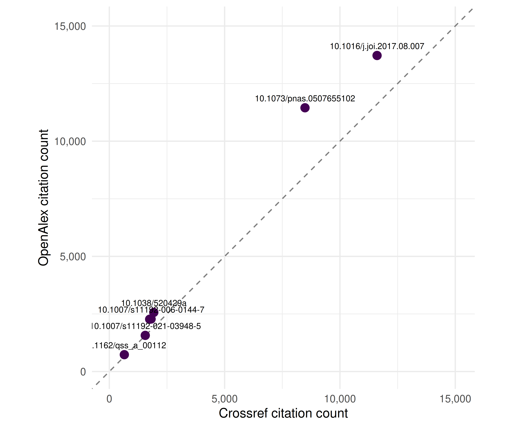

5 Data Sources Compared
5.1 Learning objectives
After completing this chapter, you will be able to:
- Describe the coverage, access model, and key strengths of twelve major bibliographic data sources
- Select an appropriate data source (or combination of sources) for a given research question
- Compare metadata completeness across sources for the same set of publications
- Evaluate the trade-offs between proprietary and open data sources for reproducible research
- Retrieve and compare metadata from OpenAlex and Crossref using R
5.3 Conceptual background
Every bibliometric analysis is fundamentally constrained by the data source that feeds it. The database you choose determines which publications are visible, which citations are counted, and which metadata fields are available. As Visser et al. (2021) demonstrated in a large-scale comparison, the major bibliographic databases differ substantially in coverage, with these differences affecting research outcomes in measurable ways. Similarly, Singh et al. (2021) showed that journal coverage varies considerably across Web of Science, Scopus, and Dimensions, with each database exhibiting distinct disciplinary strengths.
The choice of data source is not merely a technical decision — it is a methodological one with direct consequences for the validity of results. A citation analysis conducted on Web of Science will produce different numbers than the same analysis on Scopus, Dimensions, or OpenAlex, because each database indexes a different set of publications and computes citations over a different corpus. Researchers must therefore understand these differences and report them transparently, as emphasised by the Leiden Manifesto’s fourth principle: keep data collection and analytical processes open, transparent, and simple (Hicks et al. 2015).
The landscape of bibliographic data sources has shifted dramatically in recent years. The traditional duopoly of Web of Science and Scopus has been challenged by open alternatives — most notably OpenAlex (Priem et al. 2022), which provides free, unrestricted access to over 250 million scholarly works. Crossref serves as the backbone registration agency for DOIs and provides rich metadata for over 150 million records. Discipline-specific databases like PubMed, ADS, and arXiv serve targeted communities with deep, curated coverage.
For this book, we adopt OpenAlex as the primary data source because it is fully open, freely accessible via API without authentication, and provides coverage comparable to proprietary alternatives. However, responsible bibliometric practice often requires consulting multiple sources to cross-validate findings and fill coverage gaps.
5.3.1 Twelve data sources at a glance
Below we summarise twelve major sources. The subsequent sections examine each in detail, and the comparison table provides a structured overview.
Web of Science (WoS). Maintained by Clarivate, WoS is the oldest and most established citation index, originating from Eugene Garfield’s Science Citation Index (Garfield 1955). It covers approximately 90 million records from over 21,000 journals, with citation data back to 1900. Access requires an institutional subscription. Its strengths are curated journal selection, long historical coverage, and the Journal Citation Reports (JCR). Its main limitations are cost, restricted API access, and lower coverage of non-English literature, social sciences, and humanities.
Scopus. Elsevier’s Scopus indexes over 94 million records from approximately 27,000 journals, with broader coverage of non-English titles and conference proceedings than WoS. It provides its own citation metrics (CiteScore, SJR, SNIP) and a well-documented API. Like WoS, it requires an institutional subscription.
Dimensions. Operated by Digital Science, Dimensions indexes over 140 million publications including journal articles, books, book chapters, preprints, clinical trials, patents, and policy documents. It offers a free tier with limited functionality and a paid tier with full API access. Its distinctive strength is linking publications to grants, patents, clinical trials, and policy documents.
OpenAlex. The successor to the discontinued Microsoft Academic Graph, OpenAlex is a fully open, freely accessible index of over 250 million scholarly works (Priem et al. 2022). It aggregates data from Crossref, PubMed, institutional repositories, and other open sources. Its API requires no authentication (though a polite-pool email is recommended). OpenAlex provides author disambiguation, institutional affiliation data, and concept tagging. Its primary limitations are metadata quality (algorithmically parsed, not manually curated) and less granular subject classification than curated databases.
The Lens. Operated by Cambia, The Lens provides free access to over 300 million scholarly works and 160 million patent records. It aggregates data from Crossref, PubMed, Microsoft Academic, and patent offices. Its unique strength is integrated patent-paper linkage, making it valuable for technology-transfer and innovation studies. API access is available via a free institutional plan.
Crossref. Crossref is the DOI registration agency for scholarly publications, covering over 150 million records. It is not a citation index per se — it provides metadata deposited by publishers, including titles, authors, abstracts, reference lists, and licensing information. Its REST API is freely accessible. Crossref’s strengths are comprehensive DOI coverage and detailed reference metadata; its limitation is that metadata quality depends entirely on what publishers deposit.
PubMed/MEDLINE. Maintained by the US National Library of Medicine, PubMed indexes over 36 million records in the biomedical and life sciences. Its key strengths are curated MeSH (Medical Subject Headings) indexing, structured abstracts, and deep coverage of clinical and biomedical literature. PubMed does not provide its own citation counts but can be paired with citation data from other sources.
Google Scholar. Google Scholar provides the broadest coverage of any scholarly search engine, indexing journal articles, conference papers, theses, books, patents, and grey literature. However, it provides no API, no bulk data export, and no structured metadata. It is useful for discovery and for its “Cited by” feature but is not suitable for systematic bibliometric analysis.
Semantic Scholar. Operated by the Allen Institute for AI, Semantic Scholar indexes over 200 million papers and provides a free API with rich metadata including algorithmically extracted entities, TLDR summaries, and citation context. It is particularly strong in computer science, biomedical, and neuroscience literature.
NASA/ADS (Astrophysics Data System). ADS is a curated database of over 16 million records in astronomy, astrophysics, and physics. It provides excellent citation tracking, full-text search, and a well-documented API. For astronomical research, ADS is the gold standard.
arXiv. The original preprint server, arXiv hosts over 2.5 million preprints in physics, mathematics, computer science, quantitative biology, quantitative finance, statistics, and electrical engineering. It does not provide citation data directly but its records are indexed by other databases. Its API provides metadata access.
bioRxiv/medRxiv. The preprint servers for biology and health sciences, hosting over 300,000 preprints. They provide API access to metadata and full text and are indexed by OpenAlex, Dimensions, and other aggregators.
5.4 Worked example
We now compare what OpenAlex and Crossref return for the same set of DOIs. This is a practical illustration of how metadata completeness varies across sources.
5.4.1 Selecting DOIs
We start with a small set of well-known scientometrics papers whose DOIs we know.
dois <- c(
"10.1038/520429a", # Hicks et al. 2015, Leiden Manifesto
"10.1073/pnas.0507655102", # Hirsch 2005, h-index
"10.1007/s11192-006-0144-7", # Egghe 2006, g-index
"10.1016/j.joi.2017.08.007", # Aria & Cuccurullo 2017, bibliometrix
"10.1126/science.122.3159.108", # Garfield 1955, citation indexes
"10.48550/arXiv.2205.01833", # Priem et al. 2022, OpenAlex
"10.1162/qss_a_00112", # Visser et al. 2021, database comparison
"10.1007/s11192-021-03948-5" # Singh et al. 2021, journal coverage
)5.4.2 Fetching from OpenAlex
oa_results <- oa_fetch(
entity = "works",
doi = dois
)
oa_meta <- oa_results |>
transmute(
doi = doi,
source = "OpenAlex",
title = display_name,
year = publication_year,
cited_by = cited_by_count,
has_abstract = !is.na(abstract),
type = type
)
glimpse(oa_meta)#> Rows: 9
#> Columns: 7
#> $ doi <chr> "https://doi.org/10.1016/j.joi.2017.08.007", "https://doi…
#> $ source <chr> "OpenAlex", "OpenAlex", "OpenAlex", "OpenAlex", "OpenAlex…
#> $ title <chr> "bibliometrix : An R-tool for comprehensive science mappi…
#> $ year <int> 2017, 2005, 2015, 2006, 1955, 2021, 2021, 2022, 1970
#> $ cited_by <int> 13720, 11450, 2567, 2280, 2270, 1569, 732, 274, 4
#> $ has_abstract <lgl> FALSE, TRUE, FALSE, FALSE, TRUE, FALSE, TRUE, TRUE, FALSE
#> $ type <chr> "article", "article", "article", "article", "article", "a…5.4.3 Fetching from Crossref
cr_results <- cr_works(dois = dois)
cr_meta <- cr_results$data |>
transmute(
doi = doi,
source = "Crossref",
title = title,
year = as.integer(
coalesce(
substr(issued, 1, 4),
substr(deposited, 1, 4)
)
),
cited_by = as.integer(is.referenced.by.count),
has_abstract = !is.na(abstract),
type = type
)
glimpse(cr_meta)#> Rows: 7
#> Columns: 7
#> $ doi <chr> "10.1038/520429a", "10.1073/pnas.0507655102", "10.1007/s1…
#> $ source <chr> "Crossref", "Crossref", "Crossref", "Crossref", "Crossref…
#> $ title <chr> "Bibliometrics: The Leiden Manifesto for research metrics…
#> $ year <int> 2015, 2005, 2006, 2017, 1955, 2021, 2021
#> $ cited_by <int> 1928, 8484, 1811, 11609, 1749, 650, 1558
#> $ has_abstract <lgl> FALSE, TRUE, FALSE, FALSE, FALSE, TRUE, FALSE
#> $ type <chr> "journal-article", "journal-article", "journal-article", …5.4.4 Comparing metadata completeness
comparison <- bind_rows(oa_meta, cr_meta) |>
mutate(short_doi = str_extract(doi, "[^/]+/[^/]+$"))
comparison_wide <- comparison |>
select(short_doi, source, year, cited_by, has_abstract, type) |>
pivot_wider(
names_from = source,
values_from = c(year, cited_by, has_abstract, type),
names_glue = "{source}_{.value}"
)
comparison_wide |>
gt() |>
tab_header(
title = "Metadata comparison: OpenAlex vs. Crossref",
subtitle = "Same DOIs queried from both sources"
) |>
cols_label(
short_doi = "DOI (short)",
OpenAlex_year = "OA Year",
Crossref_year = "CR Year",
OpenAlex_cited_by = "OA Citations",
Crossref_cited_by = "CR Citations",
OpenAlex_has_abstract = "OA Abstract?",
Crossref_has_abstract = "CR Abstract?",
OpenAlex_type = "OA Type",
Crossref_type = "CR Type"
)| Metadata comparison: OpenAlex vs. Crossref | ||||||||
| Same DOIs queried from both sources | ||||||||
| DOI (short) | OA Year | CR Year | OA Citations | CR Citations | OA Abstract? | CR Abstract? | OA Type | CR Type |
|---|---|---|---|---|---|---|---|---|
| 10.1016/j.joi.2017.08.007 | 2017 | 2017 | 13720 | 11609 | FALSE | FALSE | article | journal-article |
| 10.1073/pnas.0507655102 | 2005 | 2005 | 11450 | 8484 | TRUE | TRUE | article | journal-article |
| 10.1038/520429a | 2015, 1970 | 2015 | 2567, 4 | 1928 | FALSE, FALSE | FALSE | article, article | journal-article |
| 10.1007/s11192-006-0144-7 | 2006 | 2006 | 2280 | 1811 | FALSE | FALSE | article | journal-article |
| 10.1126/science.122.3159.108 | 1955 | 1955 | 2270 | 1749 | TRUE | FALSE | article | journal-article |
| 10.1007/s11192-021-03948-5 | 2021 | 2021 | 1569 | 1558 | FALSE | FALSE | article | journal-article |
| 10.1162/qss_a_00112 | 2021 | 2021 | 732 | 650 | TRUE | TRUE | article | journal-article |
| 10.48550/arxiv.2205.01833 | 2022 | 274 | TRUE | preprint | ||||
5.4.5 Visualization: citation count comparison
cite_compare <- comparison |>
select(short_doi, source, cited_by) |>
pivot_wider(names_from = source, values_from = cited_by, values_fn = first)
if (nrow(cite_compare) > 0 && all(c("OpenAlex", "Crossref") %in% names(cite_compare))) {
max_cite <- max(c(cite_compare$OpenAlex, cite_compare$Crossref), na.rm = TRUE)
ggplot(cite_compare, aes(x = Crossref, y = OpenAlex)) +
geom_abline(slope = 1, intercept = 0, linetype = "dashed", colour = "grey50") +
geom_point(size = 3, colour = palette_sci(1)) +
geom_text(
aes(label = short_doi),
size = 2.5, nudge_y = max_cite * 0.03, check_overlap = TRUE
) +
scale_x_continuous(labels = scales::comma_format()) +
scale_y_continuous(labels = scales::comma_format()) +
coord_equal(xlim = c(0, max_cite * 1.1), ylim = c(0, max_cite * 1.1)) +
labs(x = "Crossref citation count", y = "OpenAlex citation count") +
theme_sci()
}
Figure 5.1: Citation counts reported by OpenAlex vs. Crossref for the same set of DOIs. Points above the diagonal indicate higher counts in OpenAlex.
5.4.6 Summary comparison table
tribble(
~Source, ~Coverage, ~`Access model`, ~API, ~`Citation data`, ~Strengths,
"Web of Science", "~90M records, 21K+ journals", "Subscription", "Yes (paid)", "Yes (complete)", "Longest history, curated selection, JCR",
"Scopus", "~94M records, 27K+ journals", "Subscription", "Yes (paid)", "Yes (complete)", "Broad journal coverage, CiteScore/SJR/SNIP",
"Dimensions", "~140M records", "Freemium", "Yes (free/paid)", "Yes", "Links pubs to grants, patents, clinical trials",
"OpenAlex", "~250M records", "Fully open", "Yes (free)", "Yes", "Open, broad coverage, author disambiguation",
"The Lens", "~300M scholarly + 160M patent", "Free (institutional)", "Yes (free)", "Partial", "Patent-paper linkage",
"Crossref", "~150M records", "Open", "Yes (free)", "Reference counts only", "DOI registry, reference lists, licensing",
"PubMed", "~36M records", "Open", "Yes (free)", "No (use with others)", "MeSH indexing, biomedical depth",
"Google Scholar", "Broadest (est. 400M+)", "Free (no bulk)", "No", "Yes (no export)", "Discovery, grey literature",
"Semantic Scholar", "~200M records", "Free", "Yes (free)", "Yes", "AI-extracted entities, citation context",
"NASA/ADS", "~16M records", "Open", "Yes (free)", "Yes", "Gold standard for astronomy/astrophysics",
"arXiv", "~2.5M preprints", "Open", "Yes (free)", "No", "Preprints in physics, math, CS",
"bioRxiv/medRxiv", "~300K preprints", "Open", "Yes (free)", "No", "Biology and health sciences preprints"
) |>
gt() |>
tab_header(
title = "Twelve bibliographic data sources compared"
) |>
tab_style(
style = cell_text(weight = "bold"),
locations = cells_column_labels()
) |>
cols_width(
Source ~ px(130),
Coverage ~ px(170),
`Access model` ~ px(100),
API ~ px(100),
`Citation data` ~ px(120),
Strengths ~ px(250)
)| Twelve bibliographic data sources compared | |||||
| Source | Coverage | Access model | API | Citation data | Strengths |
|---|---|---|---|---|---|
| Web of Science | ~90M records, 21K+ journals | Subscription | Yes (paid) | Yes (complete) | Longest history, curated selection, JCR |
| Scopus | ~94M records, 27K+ journals | Subscription | Yes (paid) | Yes (complete) | Broad journal coverage, CiteScore/SJR/SNIP |
| Dimensions | ~140M records | Freemium | Yes (free/paid) | Yes | Links pubs to grants, patents, clinical trials |
| OpenAlex | ~250M records | Fully open | Yes (free) | Yes | Open, broad coverage, author disambiguation |
| The Lens | ~300M scholarly + 160M patent | Free (institutional) | Yes (free) | Partial | Patent-paper linkage |
| Crossref | ~150M records | Open | Yes (free) | Reference counts only | DOI registry, reference lists, licensing |
| PubMed | ~36M records | Open | Yes (free) | No (use with others) | MeSH indexing, biomedical depth |
| Google Scholar | Broadest (est. 400M+) | Free (no bulk) | No | Yes (no export) | Discovery, grey literature |
| Semantic Scholar | ~200M records | Free | Yes (free) | Yes | AI-extracted entities, citation context |
| NASA/ADS | ~16M records | Open | Yes (free) | Yes | Gold standard for astronomy/astrophysics |
| arXiv | ~2.5M preprints | Open | Yes (free) | No | Preprints in physics, math, CS |
| bioRxiv/medRxiv | ~300K preprints | Open | Yes (free) | No | Biology and health sciences preprints |
5.5 Diagnostics and interpretation
When comparing metadata across sources, consider the following diagnostic checks:
- DOI match rate. Not all DOIs may resolve in every database. Check how many of your queried DOIs returned results from each source. If a DOI is missing from one source, this reveals a coverage gap.
- Citation count discrepancies. Citation counts will almost always differ between sources because each database counts citations over a different corpus. OpenAlex typically reports higher counts than Crossref because OpenAlex tracks citations across its full 250M-record corpus, whereas Crossref only counts “is-referenced-by” links deposited by publishers.
- Abstract availability. Crossref abstracts depend on publisher deposits and are often absent, especially for older publications. OpenAlex aggregates abstracts from multiple sources and generally has better coverage.
- Publication year. Minor discrepancies (e.g., online-first vs. print dates) are common. Check whether your analysis is sensitive to the exact year assigned.
- Type classification. Crossref and OpenAlex use different type taxonomies. A record classified as “journal-article” in Crossref might appear as “article” in OpenAlex. Harmonise types before analysis.
The key takeaway is that no single source is complete or definitive. Cross-validation — fetching the same records from multiple sources — is a hallmark of rigorous bibliometric practice.
5.7 Limitations and responsible use
- No database is complete. Every source has coverage gaps — by language, discipline, publication type, or geography. Analyses based on a single source will systematically miss some literature. Always report which source was used and its known biases (Hicks et al. 2015).
- Coverage does not equal quality. A larger database is not necessarily better. Google Scholar has the broadest coverage but also the highest noise level. Curated databases like WoS and PubMed trade coverage for precision.
- Proprietary sources limit reproducibility. Analyses based on Web of Science or Scopus cannot be independently reproduced by researchers without institutional access. For fully reproducible work, prefer open sources like OpenAlex, Crossref, or PubMed (Priem et al. 2022).
- Metadata quality is variable. Even within a single source, metadata quality varies by publisher, discipline, and publication date. Older records often have sparser metadata. Always inspect and clean your data before analysis.
- Citation counts are not comparable across sources. Because each database counts citations over a different corpus, citation counts from OpenAlex, Scopus, and WoS are not interchangeable. Never mix citation counts from different sources in a single analysis without explicit justification and documentation (Visser et al. 2021).
5.9 Common pitfalls
- Assuming one source is enough. Researchers often default to a single database (typically WoS or Scopus) without evaluating whether it covers their field adequately. Social sciences, humanities, and non-English literatures are systematically underrepresented in WoS (Singh et al. 2021).
- Comparing citation counts across databases. Stating that a paper has “500 citations” is meaningless without specifying the source. Different databases will report different numbers for the same paper.
- Ignoring access restrictions in reproducibility claims. If your analysis uses Scopus data, other researchers need Scopus access to reproduce it. State this explicitly and consider providing OpenAlex-based alternatives.
- Treating Google Scholar as a systematic source. Google Scholar has no API, no structured export, and no quality control on what it indexes. It is useful for discovery but not for systematic bibliometric analysis.
- Conflating preprints and peer-reviewed articles. Sources like arXiv and bioRxiv index preprints that may later be published in journals. If your corpus includes both preprints and published versions without deduplication, you will double-count some works.
5.10 Exercises
Coverage gap analysis. Select 20 DOIs from a field of your choice. Query them in OpenAlex and Crossref. How many DOIs are found in each? Which source has better abstract coverage? Summarise your findings in a table.
Disciplinary bias. Use OpenAlex to compare the number of indexed works in two contrasting fields (e.g., molecular biology vs. philosophy). Normalise by the estimated number of active researchers in each field. What does this tell you about coverage bias?
Citation count concordance. For a set of at least 50 works, retrieve citation counts from both OpenAlex and Crossref. Compute the Pearson and Spearman correlations between the two sets of counts. Plot the results. Are the two sources more concordant for highly cited or lowly cited papers?
Preprint tracking. Select 10 recent bioRxiv DOIs and check whether they appear in OpenAlex. For those that do, check whether OpenAlex links them to a published journal version. What proportion of your preprints have been published?
Source selection exercise. A colleague asks you to conduct a bibliometric analysis of nursing research in Sub-Saharan Africa. Which data source(s) would you recommend and why? Write a brief justification considering coverage, cost, and reproducibility.
5.11 Solutions
Solutions are provided in 2.11.
5.12 Further reading
- Visser et al. (2021) — Large-scale comparison of Scopus, Web of Science, Dimensions, Crossref, and Microsoft Academic. Essential reading for understanding how source choice affects results.
- Singh et al. (2021) — Comparative analysis of journal coverage across WoS, Scopus, and Dimensions. Quantifies disciplinary differences in database coverage.
- Priem et al. (2022) — The OpenAlex paper. Describes the data model, coverage, and design philosophy of the open alternative to proprietary databases.
- Garfield (1955) — The original paper proposing citation indexing. Historical context for understanding why these databases exist.
- Hicks et al. (2015) — The Leiden Manifesto. Principle 4 (transparency) and Principle 6 (field variation) are directly relevant to data source selection.
- Waltman (2016) — Review of citation impact indicators. Discusses how indicator properties interact with database coverage.
5.13 Session info
#> R version 4.4.1 (2024-06-14)
#> Platform: x86_64-pc-linux-gnu
#> Running under: Ubuntu 24.04.4 LTS
#>
#> Matrix products: default
#> BLAS: /usr/lib/x86_64-linux-gnu/openblas-pthread/libblas.so.3
#> LAPACK: /usr/lib/x86_64-linux-gnu/openblas-pthread/libopenblasp-r0.3.26.so; LAPACK version 3.12.0
#>
#> locale:
#> [1] LC_CTYPE=C.UTF-8 LC_NUMERIC=C LC_TIME=C.UTF-8
#> [4] LC_COLLATE=C.UTF-8 LC_MONETARY=C.UTF-8 LC_MESSAGES=C.UTF-8
#> [7] LC_PAPER=C.UTF-8 LC_NAME=C LC_ADDRESS=C
#> [10] LC_TELEPHONE=C LC_MEASUREMENT=C.UTF-8 LC_IDENTIFICATION=C
#>
#> time zone: UTC
#> tzcode source: system (glibc)
#>
#> attached base packages:
#> [1] stats graphics grDevices utils datasets methods base
#>
#> other attached packages:
#> [1] rcrossref_1.2.1 gt_1.3.0 tidytext_0.4.3 glue_1.8.1
#> [5] openalexR_3.0.1 lubridate_1.9.5 forcats_1.0.1 stringr_1.6.0
#> [9] dplyr_1.2.1 purrr_1.2.2 readr_2.2.0 tidyr_1.3.2
#> [13] tibble_3.3.1 ggplot2_4.0.3 tidyverse_2.0.0
#>
#> loaded via a namespace (and not attached):
#> [1] tidyselect_1.2.1 viridisLite_0.4.3 farver_2.1.2 urltools_1.7.3.1
#> [5] viridis_0.6.5 S7_0.2.2 fastmap_1.2.0 janeaustenr_1.0.0
#> [9] promises_1.5.0 digest_0.6.39 timechange_0.4.0 mime_0.13
#> [13] lifecycle_1.0.5 tokenizers_0.3.0 brand.yml_0.1.0 magrittr_2.0.5
#> [17] compiler_4.4.1 rlang_1.2.0 sass_0.4.10 tools_4.4.1
#> [21] utf8_1.2.6 yaml_2.3.12 knitr_1.51 labeling_0.4.3
#> [25] stopwords_2.3 htmlwidgets_1.6.4 curl_7.1.0 here_1.0.2
#> [29] plyr_1.8.9 xml2_1.5.2 RColorBrewer_1.1-3 httpcode_0.3.0
#> [33] miniUI_0.1.2 withr_3.0.2 triebeard_0.4.1 grid_4.4.1
#> [37] xtable_1.8-8 scales_1.4.0 dichromat_2.0-0.1 crul_1.6.0
#> [41] cli_3.6.6 rmarkdown_2.31 generics_0.1.4 otel_0.2.0
#> [45] rstudioapi_0.18.0 httr_1.4.8 tzdb_0.5.0 cachem_1.1.0
#> [49] vctrs_0.7.3 Matrix_1.7-0 jsonlite_2.0.0 bookdown_0.46
#> [53] hms_1.1.4 jquerylib_0.1.4 codetools_0.2-20 DT_0.34.0
#> [57] stringi_1.8.7 gtable_0.3.6 later_1.4.8 downlit_0.4.5
#> [61] pillar_1.11.1 htmltools_0.5.9 R6_2.6.1 rprojroot_2.1.1
#> [65] evaluate_1.0.5 shiny_1.13.0 lattice_0.22-6 SnowballC_0.7.1
#> [69] memoise_2.0.1 httpuv_1.6.17 bslib_0.10.0 Rcpp_1.1.1-1.1
#> [73] gridExtra_2.3 xfun_0.57 fs_2.1.0 pkgconfig_2.0.3